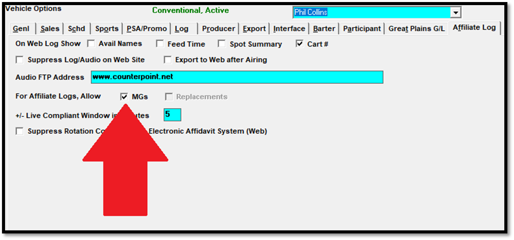

Setup Instructions
This section explains all the configuration options for the Counterpoint Affidavit System Website Version 2. There are four parts of the system that must be configured: Affiliate Site Options, the Stations Screen, Traffic Vehicle Options, and Missed/Cancel Reasons.
Affiliate Site Options
There are two relevant tabs on the Affiliate Site Options screen that require reviewing and updating: Web Options and Web MG Policy.
Important note: Please contact Counterpoint support for assistance when making any change to Affiliate Site Options.
Web Options
To view or update the settings on the Web Options tab, sign on to the Affiliate System, press the Site Options button, then press the Web Options tab.
The following new settings must be configured:
Suppress asking Missed Reason: When this option is checked on, spots on the web are marked as not aired without the ability of specifying a missed reason. When not checked on, station users must select a missed reason when marking a spot as not aired (in other words, missed reasons are mandatory). Missed reasons can be shown on Affiliate spot reports such as the Fed vs. Aired report. For more information on Missed Reasons, please see the Missed/Cancel Reasons information later in this section.
Allow Web MG Spots: When this option is checked on, makegoods can be created on the Counterpoint Affidavit system by station users of the website (for stations set to be compatible with web version 2, which is explained in the Stations Screen section below, for those vehicles that are set to allow makegoods). When not checked on, makegoods cannot be created by station website users.
If “Suppress asking Missed Reason” is checked on, the “Allow Web MG Spots” option is disabled, as missed reasons are required with makegoods.
These are three possible ways these two Web Options settings can be set:
Method 1: “Suppress asking Missed Reason” is not checked, and “Allow Web MG Spots” is checked.
With this method, station website users will be required to select a missed reason when marking a spot as “Not Aired”, and will be able to create makegoods from spots they missed.
Method 2: “Suppress asking Missed Reason” is checked, “Allow Web MG Spots” is grayed out.
With this method, station website users will not be able to select a missed reason when marking a spot as “Not Aired”, and will not be able to create makegoods.
Method 3: “Suppress asking Missed Reason” and “Allow Web MG Spots” are both not checked.
With this method, station website users will be required to select a missed reason when marking a spot as “Not Aired”, and will not be able to create makegoods.
Allow Posting on Today and in Future Days: For stations set to use website version 1 (configured on the Stations screen in the Web Affiliate Version Number field), whether this setting is checked on or off, station users of the Counterpoint Affidavit System will be allowed to post spots airing on today's date or for future dates (or past dates). For stations set to use website version 2, when this option is checked on, then future spots and spots on today's date (or in the past) can be posted normally. When this option is not checked, then when viewing affidavits on the station website, any spots pledged to air today or in the future will have their "Aired" status field and "Air time" field grayed out, which prevents them from being posted. Once those spots are in the past, those fields will no longer be grayed out and can be posted normally.
Keep Multicast Stations in Sync: When not checked on, after a web affidavit has been posted for a multicast agreement, changes can be made to the posted spots that do not get copied to the other station or stations in that multicast agreement. When checked on, after a web affidavit has been posted for a multicast agreement, changes made to the posted spots will get copied to the other station or stations in that multicast agreement, keeping the multicast affidavits entirely in sync.
For a complete description of every Affiliate Site Option setting, please see the Affiliate Site Options help document that is available on the Counterpoint website.
Web MG Policy
To view or update the settings on the Web MG Policy tab, sign on to the Affiliate System, press the Site Options button, then press the Web MG Policy tab. The settings on this screen determine the rules for web makegood creation. For a makegood to get created successfully, the user-entered makegood information must pass the selected rules. If a station website user attempts to enter a makegood that would violate one or more of these rules, they will see a warning message that explains the first rule violation. For example, if the makegood setting “must air within missed standard broadcast month” is violated by entering a makegood date outside of the standard broadcast month that the spot was missed from, a warning message will appear that states that the makegood must be in the same standard broadcast month as the missed spot. Note that a single spot could violate several rules.

- Makegood
- Must air within Standard Broadcast Month: When this is selected, to create a makegood, it must be given an air date within the same standard broadcast month as the original missed spot. If this option is selected, the setting “Miss in last week of broadcast month, makegood OK in next week” below becomes available.
- Must air within X days of missed date: When this is selected, to create a makegood spot successfully, it must be given an air date within the number of days specified here.
- Can air on any date: When this is selected, when creating makegoods, the air date can be any date as long as none of the other date rules are violated (such as the “book only into order flight days” rule), and there is at least one spot from the same contract airing in the intended makegood week.
- Miss in last week of broadcast month, makegood OK in next week: If a spot was missed in the last week of the standard broadcast month, when this is checked on, it can be made good in the first week of the next broadcast month. (This option is only available if the “Makegood must air within standard broadcast month” radio button is selected.)
- Disallow MGs in hiatus weeks: When this is checked on, there must be at least one other spot for the same contract airing in the makegood week. If there isn’t at least one spot, the week is considered a “hiatus” week and the makegood cannot be created for that week.
- Book only into order flight days: When this is checked on, when creating a makegood, the makegood air date must be on one of the valid days of the week for the missed spot, using the daypart defined for the contract line.
- Time Restrictions: The Time Restrictions settings determine what makegood times are accepted. A warning message will appear if a station user attempts to enter a makegood time that violates the time restriction rule.
- Order Flight Times: When set to Order Flight Times, the makegood aired time must be within the ordered flight times (as defined on the contract daypart for exact time spots, or within the station pledge time range for ROS spots).
- Station Pledge Times: the makegood aired time must be within the agreed upon pledge time range for ROS spots, or within a standard daypart for exact time spots.
- Day Split: With the "Day Split" setting, spots missed between 12m-5a can be made good at any time. Spots missed between 5a-12m can only be made good between 5a-12m.
- Any Time: any makegood time is accepted.
- ISCI Restrictions: The ISCI Restriction setting is used to determine what rules apply to the makegood ISCI code.
- Same Order: the makegood ISCI must be the ISCI from the contract.
- Same Order, then Same Advertiser: if there’s no valid ISCI for the contract, it will be possible to select another ISCI for the same advertiser but from a different contract.
- Same Order + New: the user can select an ISCI from the same contract, or enter a new ISCI code.
- Same Order, then Same Advertiser + New: the user can select an ISCI from the same contract, or from the same advertiser but from a different contract, or manually enter a new ISCI code.
- Competitive Separation Time in Minutes: The number of minutes specified here will appear on the “Makegood Policy” shown on the CSI Electronic Affidavit website when creating makegoods.
- Allow station the option to bypass makegood scheduling when permission granted: When set to Yes, stations using Web Version 2 and that have the web makegood feature enabled will have the ability to create a "bypassed makegood" from a missed spot, which indicates that it will never be made good. When set to No, the "bypassed makegood" feature will be entirely hidden from station website users.
Station users will see the selected rules on the website Makegood Policy screen, which is viewable from the screen where makegoods are created from (Makegood Policy example shown below).
Stations Screen
On the Affiliate Stations Screen, Interface tab, the field “Web Affiliate Version Number” is used to indicate which website version the station will use.
By setting a station to the number 2, when station users at that station sign on, they will be directed to the new version 2 website.
By setting a station to the number 1 (the current default for new stations), when station users sign on to the website, they will be automatically directed to the original Electronic Affidavit website. Stations set to web version 1 will not be able to create makegoods or select missed reasons, and the website they access will look and function identically to the affidavit website they were previously using.
Browser Compatibility with Web Version 2
The Counterpoint Affidavit system works best on Internet Explorer 10 and above, and on Google Chrome and Firefox. If station users are using Internet Explorer 9 or earlier versions of Internet Explorer, because the website is not fully compatible with these older browser versions, they will receive a warning message after logging in that they are using an older browser.
From here, there are several options available:
- If they are using Internet Explorer 8 or earlier, they can contact their IT department about upgrading to a newer version of Windows so that they can use a more recent version of Internet Explorer (with Windows XP, Internet Explorer 8 is the highest version of Internet Explorer available).
- If they are using Internet Explorer 9, they can download and install Internet Explorer 11 from Microsoft’s website, or they can continue using the system with their current browser by pressing the “Continue” button, knowing that they may experience slowness and other issues.
- They can download and install a different browser, either Google Chrome or Firefox, by clicking the corresponding link on the warning screen. If Chrome or Firefox is already installed, they can log in using that browser instead.
When deciding which stations to switch to Web Version 2, you can use the Affiliate Affidavit Posting Activity report to view what browsers station users are using. This report shows the browser name and version number in the “Poster’s Name” field for affidavits that were posted. Station users that are still using old versions of Internet Explorer will not be good candidates to upgrade to Web Version 2, as Internet Explorer 8 and earlier are not supported. On the other hand, stations using Chrome, Firefox, Edge, or Internet Explorer 10 or above, are using modern browsers that are fully compatible with Web Version 2.
Traffic Vehicle Options
If the Affiliate Site Options “Allow Web MG Spots” checkbox is checked on, then you will have the ability to set individual vehicles to either allow makegoods or disallow makegoods using the Traffic Vehicle Options screen.
To access the Traffic Vehicle Options screen, sign on to the Traffic System, press the Lists button, press Vehicles, press the Options button, then select the Affiliate Log tab. The setting “For Affiliate Logs, Allow MGs” can be checked on to enable makegoods for this vehicle, or left unchecked, to disable makegoods for this vehicle. (If Makegoods are disabled in Affiliate Site Options, then this option will be grayed out.)

With this feature, it’s possible to have some vehicles that allow makegoods and some vehicles that don’t allow makegoods.
When Makegoods are enabled in Affiliate Site Options, but disabled for a specific vehicle, on the Main Menu of the website, the words “Makegoods not allowed” will appear to the right of the vehicle name, as shown below, and on the Posting Screen. (This text will not appear if Makegoods are completely disabled in Affiliate Site Options.)

Cart Numbers on Web Log
A new option has been added to the Vehicle Options screen, Affiliate Log tab, in the “Web Log” section, labeled “Cart #”. When this is checked on, the cart number will be shown on the web log, on the printed web log, and on the PDF web log that can be generated from the web log screen. See example web log below, with the cart number being shown in the “Cart” field:
Missed/Cancel Reasons
If “Suppress Asking Missed Reason” is not checked in Affiliate Site Options, when station users mark a spot as Not Aired, they will be forced to select a missed reason from a list of available missed reasons. The list of missed reasons is configured in Traffic System Lists, using the Missed/Cancel Reasons screen.
To have a missed reason appear on the station website missed reason list, choose one of the following two options from the “For” field:
- Station Missed: This missed reason will appear in the list of missed reasons on the Station website only (not on the Traffic system).
- Network & Station Missed: This missed reason will appear in the list of missed reasons for both the Traffic System and the CSI Electronic Affidavit System (version 2).
When a station user marks a spot as “Not Aired’, the missed reasons set to “Station Missed” or “Network & Station Missed” will appear in the list of missed reasons, as shown below.
The user must pick one of the missed reasons to successfully mark the spot as “Not Aired” (when missed reasons are enabled in Affiliate Site Options. If missed reasons are not enabled, the missed reason popup will not appear).